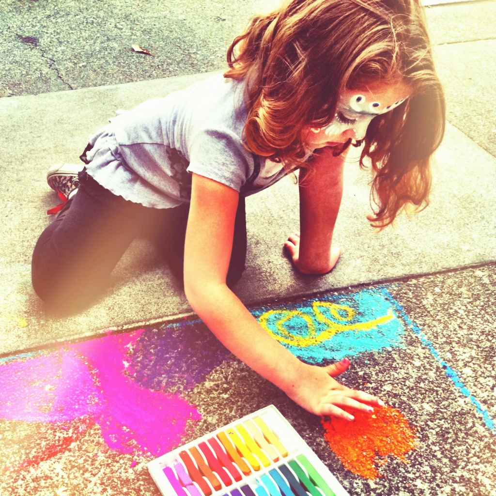
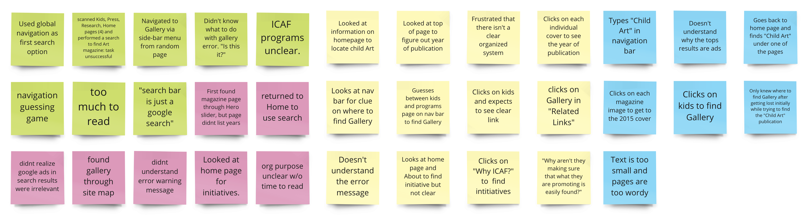
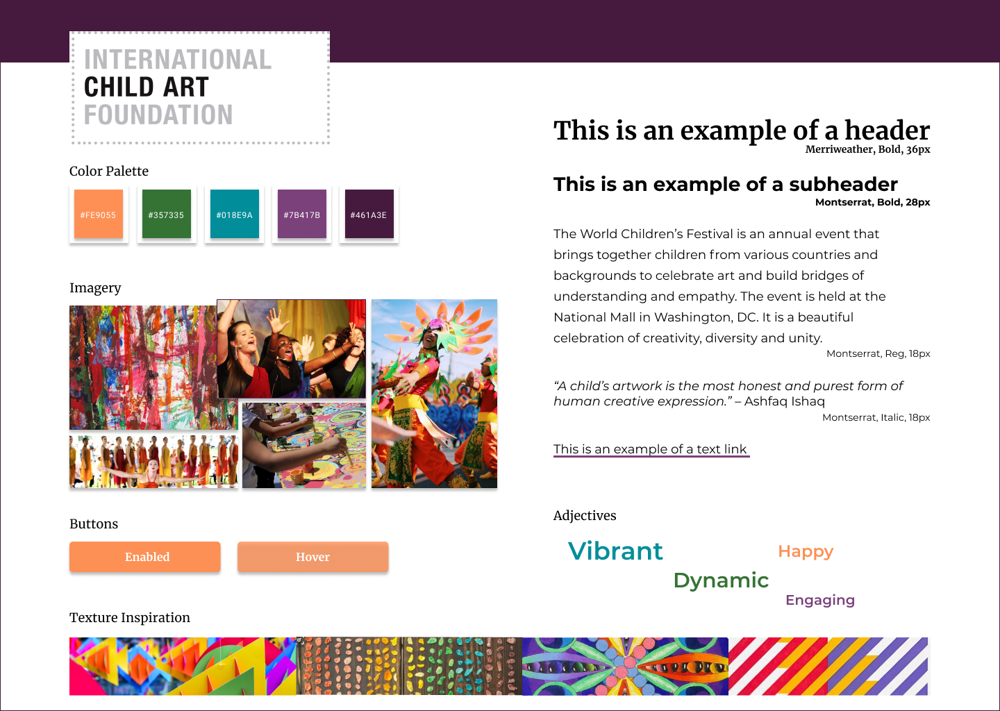

Defining the Problem

Have you ever wanted to contribute to a local organization but had trouble navigating its website?
The mission of the International Child Art Foundation (ICAF), a nonprofit located in Washington D.C., is to cultivate creativity and grow empathy in children through art for sustainable prosperity and a peaceful future. They sponsor several large-scale initatives every few years that attract visitors from all over the world, and they rely entirely on donations to fund these activities.
With their current focus on planning their flagship event, the 6th Arts Olympiad, for Summer 2021 while COVID-19 precautions remain effect,
We set out to reimagine how the ICAF could leverage its web presence as a way to drive sponsorships and donations.
Working virtually across the Washington Metro Area, we spent one week in our research phase, gathering information from Internet reviews, competitive analyses, heuristic evaluations, and user and stakeholder interviews.
What We Learned
When we interviewed ICAF founder Dr. Ashfaq Ishaq, we were really inspired by his passion for developing empathy in children. For the redesign, Dr. Ishaq wanted to see the ICAF's online presence embody his vision for the organization - both playful and academic. He was also eager to learn what visual changes might help extend the ICAF's reach.
User testing told us a lot more about gaps. We asked four users to complete three key tasks to assess functionality of the current site.
Task completion rate was only 50%.
We categorized our findings from testing into these usability challenges:
- Navigation Guessing Game
- Unhelpful Error Messaging
- Heavy Text Without Meaning
- ICAF Mission Unclear
- No Clear Information Architecture
We also analyzed the ICAF site for accessibility and universal design principles, identifying other opportunities to improve color contrast, content hierarchy, and architecture so content is easy to find.
Most critical of all, we wanted the website to be a showcase for child creativity and art.
Design Process
In the second week of our project, we consolidated our findings and prioritized features for development based on 25+ selected data points from our user tests. We developed a user persona based on one of ICAF's key demographics – an elementary school teacher – and in storyboards, we reimagined ways to simplify the process for parents and teachers to find resources for their children and students through the ICAF’s website.

Data points from user research.
Early Concepts
Initial ideas for the Homepage focused on a diverse mix of program descriptions, featured content, and shortcuts to resources that our user persona would look for. We also wanted the ICAF's mission to be immediately understood, with a clear call to action for donors. We felt these concepts, along with an easy navigation bar, would help eliminate the endless click circles experienced by our test group.

Mockup

Homepage Wireframe
Testing
We conducted two levels of testing at low and mid-fidelity with eight users to see if our design would improve user experience. We asked them to:
- Find information about the next Arts Olympiad
- Tell us alternate ways to make a donation
- Describe the mission of the ICAF
This time, task completion rate was 100%.
Inspiration
Because ICAF did not have brand colors or a style guide, we compiled sources of inspiration with textures and images found within the site's archives and designed a style tile as part of our deliverables.

Prototypes
For the desktop prototype, we made multiple improvements based on test feedback from users, including a modified donation page for easier recognition, corrected buttons for consistency, and improved readabiity for text.
For mobile, we designed two unique, responsive layouts and tested them for UI preference and navigation with 24 users. Layout B performed better with users for design preference, but users had a higher rate of task completion with Layout A. This suggested to us that for ICAF, finding the balance between form and function was really critical for the organization to successfully reach its audience.

Mobile Layout A
Clean
Intuitive
Low Effort User Flow

Mobile Layout B
More Interactions
Compact Design
Room for Improvement
Before we closed out our project, we had one last test on our concept, and that was a virtual presentation to Dr. Ishaq. We shared the findings from our user research and talked through the tested design concepts we implemented to improve usability. We also shared metrics from our A/B testing, and he responded positively, grateful to be aware of the data that underpinned our decisions.
The true test of our design would be to see how it fares in the wild. Unanalyzed metrics from our user testing would likely yield many further opportunities to improve site navigation and content layout. With more time, we would also be able to advance the prototype into a coded interface to share with the nonprofit as a thank you for their openness and positivity.